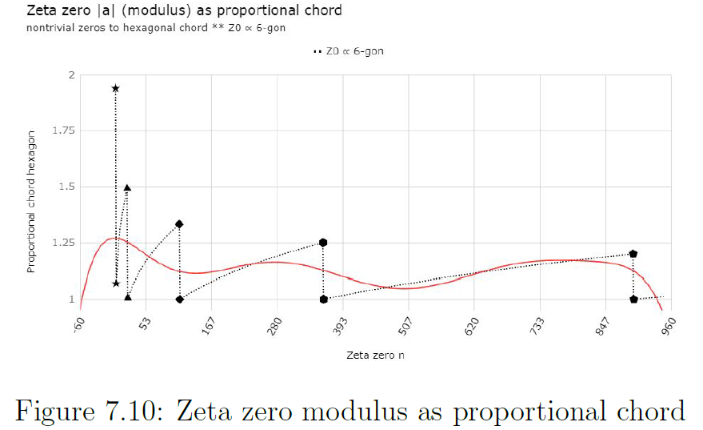

Working notebook — speculative, unfinished, not peer-reviewed.
The QGF is based on the properties of a complete convex set, complete because no points exist outside the set, the set is the complete universe.
F7.01 Convex set
If the line segment joining any pair of arbitrary points (x,y) lie completely within the set boundary, the set is convex. Since the red part of the (black and red) line-segment joining the points x and y lies outside of the set, the set is non-convex.
—Wikipedia: Convex set
The ‘Quadrature Geometric Framework’ is a model for a ‘first principle’, an ‘ab initio’ condition that underpins behavior of units in both mathematics (numbers), as physics (wave/particles) and be shown to emerge independently with the physical realm.
Primorial hexagon plus
The basis for the QGF is derived from the primorial hexagon, figure 3.4: Primorial hexagon. The QGF (figure 7.2 quadrature geometric framework has a pole at $2.5^{2}=\frac{2\pi}{\looparrowright}$ and at $2\pi=2.5^{2}\times\looparrowright$, see the zoomed in section on the lower right.
This dual notation is by design, for all intents and purposes these coordinates $2\pi\;and\;2.5^{2}$ are to be considered one and the same and only separated by arbitrary choice of perspective.
F7.02 Quadrature Geometric Framework
The illustration shows chords within the bounds of the pole $\left(2\pi\;and\;2.5^{2}\right)$ and chords stretching out beyond the pole, also indicated is a chord at infinity orthogonal to the x-axis. The chords belong to n-gon that have two identities.
Scale invariant. The scale invariant coordinates for the n-gon are simply the x-coordinate x=n for he circumscribed circle, this is the identity from which the chord length is calculated.
Absolute. Because the pole at $\frac{25}{25}=2.5^{2}=1$, all n have a absolute coordinate relative to the (chosen) pole. The absolute coordinate for a n-gon is $q=\frac{n}{2.5^{2}}$, e.g. $n=6\rightarrow\frac{6}{2.5^{2}}=\frac{24}{25}=0.96$
One ring to enclose them all
Each arbitrary x-coordinate can be designated as pole, that x coordinate becomes the unit and spawns its unique set of n-gons.
This is done by selecting a $q\in\mathbb{Q}$ and if needed change perspective by $x\in\mathbb{R}=q\times\looparrowright$, using a $\looparrowright$ with sufficient decimal expansion.
Mathematically both the region drawn inside the pole as well the region extending beyond lay within the convex set. It is the pole at $2.5^{2}\rightarrow2\pi$ that represents the boundary of the infinite plane of the QGF, not the boundary that divides $x<pole<x$. e.g. $\frac{6}{2.5^{2}}=\frac{24}{25}=0.96<pole<\frac{7}{2.5^{2}}=\frac{28}{25}=1.12$ spans the pole seamlessly.
In physical systems, however, this pole represents the ‘boundary’ of the universe, the point at infinity as you will. The region that geometrically projects beyond $2\pi\;and\;2.5^{2}$ to infinity, will in physical projection overlay the area $\left[6,2\pi\right]$.
The pole at $2.5^{2}\looparrowright=\frac{2\pi}{\looparrowright}$ can be understood to behave in physical sense as end of a medium and a (maximum elastic) reflector.
The scale invariant coordinates for the n-gon are simply the x-coordinate x=n for the circumscribed circle. From this the length of the chords can be easily calculated by $cl_{n}=2n\times\sin\left(\frac{2\pi}{2\times n}\right)$.
The unit chord from which all others are measured (table 7.1 QGF standard chord and deviation) is the chord for $n=6\rightarrow cl_{6}=2\times6\times\sin\left(\frac{2\pi}{2\times6}\right)=6$.
In table 4.1:Discrete triangular - Continues projection plane, $T_{n=3}\rightarrow r_{q}=\sqrt{\frac{3}{4}}$, associated with $\zeta\left(2\right)$, marks chord $h_{init}=\frac{\sqrt{5}}{2}\rightarrow\left(\angle50.77\text{°}\right)$ in Figure 5.2: Planck base - Unity chord.
This matches with table 7.1 QGF standard chord and deviation $n=3\rightarrow c_{3}=0.8660254038$ because $\frac{cl_{3}}{cl_{6}}=c_{3}$. By this the absolute value $T_{n=3}\rightarrow r_{q}=\left|\sqrt{\frac{3}{4}}\right|=0.8660254038$ reflects the scale invariant $b=sin\left(\frac{\pi}{3}\right)$ proportional to any hexagon.
The obvious difference is that $cl_{n}$ is the hypotenuse and $b=sin\left(\frac{\pi}{3}\right)$ a right angle side. The interchange of sides b and c is one aspect, the fact that $b:c\;\;as\;\;1:sin\left(\frac{\pi}{3}\right)$ means that although $b=sin\left(\frac{\pi}{3}\right)^{2}=\frac{3}{4}$ is a proportion that can occur,
but not if b is approached as the absolute value $r_{q}=\sqrt{\frac{3}{4}}\rightarrow\left(\angle ABC=50.77^{\text{°}}\right)$, e.g. the circumference of a circle with radius $\left|1\right|$ is $\left|2\pi\right|$, the circumference of a circle with radius $\left|2\pi\right|$ is proportionally $2\pi$, but in absolute terms $\left(2\pi\right)^{2}$.
As is with $r_{q}=\left|\sqrt{\frac{3}{4}}\right|$ if for a right angled triangle $c=\left|\sqrt{\frac{3}{4}}\right|\; then\; r_{q}\neq\left|\sqrt{\frac{3}{4}}\right|$
Where does the unity chord live
The right angled sides associated with a unity chord are derived from the chord (hypotenuse) by $=2\left(\frac{cl}{1\frac{1}{4}}\right)-cl$ and $b=\frac{0.5}{a}$. From b derive the value a for the associated $A_{\square}$ projection.
The ratio is the same as encountered in figure 6.6: M-brane mono surface detail 9 over 60, where for each cycle the affected area is divided in $\triangle AED=\frac{9}{60}$ and $\square EBCD=\frac{1}{60}$ , a function ofar ea dependent on the angle and “calibrated” to exact $\frac{A}{60}$.
The interpretation is that in physical systems this margin translates to apparent spatial aspects, but abstract geometry can not, does not enforce spatial aspects, a method for independent emergent behavior that underlays the QGF must exist.
The primorial connection
The ratio is related to the primorial function by the following observation:
Because the total cycle over the quadrant stretches $90\text{°}\rightarrow\frac{3}{2}\times\frac{1}{60}=\frac{1}{40}$ must be the unit increment per cycle, $\frac{360\text{°}}{40\text{°}}=9\text{°}$.
Each $60\text{°}$ period represented by $\zeta\left(2\right)=\frac{\pi^{2}}{6}$, projects on a $90\text{°}$ plane and represents the traversed angle $90\text{°}$ as function of area.
The angle progresses in steps of $\frac{1}{10}90\text{°}=9\text{°}$ or $\frac{1}{10}60=6\text{°}$ dependent on chosen projection $\left(\frac{1}{40}360=\frac{1}{10}90\text{°}=9\text{°}\right)\;\;or\;\;\left(\frac{1}{10}60\text{°}=6\text{°}\right)$.
In short, the decimal system emerges from the sexagesimal expanding/decreasing area as it takes 10 incremental periods to complete 60 parts. Note that these 10 periods are grouped in 2 cycles of $5\times9\text{°}=45\text{°}$.
Powers of ten to infinity
In table 5.1: Hexagonal equilibrium, the column $c_{\hbar}\rightarrow n=2\rightarrow\sqrt{\frac{1}{4}}\sqrt{5}=\frac{\sqrt{5}}{2}$ indicates that $10\frac{\sqrt{5}}{2}=5\sqrt{5}=10\sqrt{1\frac{1}{4}}$ occurs in the span of $60\text{°}$.
This translates to a span of $\left(\frac{1}{40}360=\frac{1}{10}90\text{°}=9\text{°}\right)$ in which 2 cycles of $5\times9\text{°}=45\text{°}$ each account for $5\sqrt{5}=10\sqrt{1\frac{1}{4}}$, a tenfold increase of the chord $\sqrt{1\frac{1}{4}}$ over the span of the triangular projection, see table 4.1: Discrete triangular - Continues projection plane, and figure 5.2:Planck base - Unity chord, and likewise the primorial root 2 approach,
By some measure, the chords expand or decrease in size with a factor 10 and everything apparently blows up. But there is a solution that at its core has dark energy and zeta zero's intimately entangled in a numerical expansion that will make perfect sense. But first why chords do not resize absolutely, only relatively.
In the QGF configuration the length of the chords of each n-gon is $cl_{n}=2n\times c_{n}$ and approaches a length of $2\pi$, $\lim_{n\rightarrow\infty}cl_{n}=2\pi$. This limit to the chord length is the key that allows us to define a physical model from which the QGF as first principle emerges and by this the foundation under the otherwise unreasonable effectiveness of mathematics in modeling the observed universe and its physical interactions.
The natural state as repository of potential
The n-chords in the QGF have their own “orbits” at the geometric radius $x=\frac{4n}{2.5^{2}}=n\times0.16$ (relative to the pole at $\frac{25}{25}$).
All QGF chords are periodic chords, but will only be revealed as such when expressed by a modulated repository of potential. In the physical implementation of the QGF the pole at $x=2.5^{2}$ is absolute, it represents the outer limit of a complete convex set.
In figure 7.3: QGF natural state, the horizontal shaded bar encloses a vertical range, $y=\left[\left(2\pi\times sin\left(\frac{\pi}{3}\right)\right),2\pi\right]$ and stretches over the range $x=\left[\pi,\infty\right]$. The lower end is $b=2\pi\times sin\left(\frac{\pi}{3}\right)$ because the chord at $c=2\pi$ is in fact the $90\text{°}$ orthogonal chord at infinity projected as a hexagonal chord under $60\text{°}$.
Herein we find the two configurations responsible for the $90\text{°}$ vs $60\text{°}$ as mentioned under subsection 7 - Powers of ten to infinity. The whole range between the pole and infinity gets confined to the maximum radius $x=2\pi$ and the accumulated sum translates, because orthogonal, to $A=\left(2\pi\right)^{2}=4\times\pi^{2}$.
At coordinate x=1, the circle has a circumference of $c=2\pi$. This is to be considered the chord at infinity as shown on the right of the picture at $x=\infty$.
The chord at infinity is the evolution of the circle at x=1. The remaining chords at $n=\left[2,\infty\right\rangle$ progressively project at a steeper angle until at the limit, $\underset{n\rightarrow\infty}{lim}\angle\frac{\pi}{n}=90\text{°}$ all chords stack up to an infinite line orthogonal to the x-axis, a circle of sorts, just like the circle at coordinate 1 is a line of sorts.
A box of chords
F7.03 QGF natural state
Figure 7.3 shows that all chords fit the box, the maximum length is $\underset{n\rightarrow\infty}{lim}2n\times sin\left(\frac{2\pi}{2n}\right)=2\pi$. The number of chords contained in the box is $\#chords\rightarrow T_{n}=\left(\frac{n}{2}\right)\left(n+1\right)$, or a triangular infinity of them, $C_{box}=\left\{ 1\thinspace gon,2\thinspace gon,3\thinspace gon,4\thinspace gon,...\right\} \rightarrow T_{n}=\sum_{n\rightarrow\infty}n=\left\{1+2+3+4+...\right\}$
In figure 7.3 the shaded area between the 6-gon chord at x=6 and the $2\pi-gon$ at $x=2\pi=pole$ is the range of the $C_{box}$, labeled the harmonic range $\left\{1,\frac{1}{2},\frac{1}{3},\frac{1}{4},\frac{1}{5},\dots\right\}$ because that shaded area only holds $\frac{1}{n}$, the first chord of each n-gon.
Each coordinate in the range $x=\left[6,2\pi\right]$ is a radius for a hexagon with radius x and chord size x. In figure 7.3 the x-coordinate is normalized to $C_{box}x\;\forall n\rightarrow x=\frac{2n\times sin\left(\frac{2\pi}{2n}\right)}{6}=\left[1,\frac{\pi}{3}\right]$ which is the range for column $\frac{cl_{n}}{cl_{6}}$, table 7.1: QGF standard chord and deviation, for $n=6$ to $n=\infty$.
F7.04 QGF natural state normalized pole
The question is how to confine the infinite set of chords to $C_{box}$, and more pressing (no pun intended), how to fit for example a 10-gon in a 6-gon box.
Compression is the answer to surplus chords, in table 7.2:Chord length and relative density, the column n starts at $n=6$. In their geometric identity all chords for $n<7$ can be inscribed n times at $x=n$. The chords for $n>6$ that are part of the same set do not fit any other x-coordinate because the QGF framework is designed this way, absolute position, absolute size, each chord represents a unique coordinate.
The column $x_{n}$ in table 7.2: Chord length and relative density, lists the calculated length of the chords at their designated geometric x coordinate, starting with $x_{n}=6$ and thereafter the chords get progressively larger.
The chord at $n=\infty$ is exactly $2\pi$ and allows for a hexagon with radius $r=2\pi$ to fit inside the pole.
This means that each $x_{n}$ fits the $C_{box}$ as hexagon at coordinate $x_{n}$. The column $\rho_{n}$ lists the normalized $x_{n}$ and column $\frac{1}{6}n$ lists how many such chords are available for coordinate $x_{n}$. Column “surplus” shows the amount of chords the local hexagon does not allow for if not expressed as density/compression factor $\rho_{n}=\frac{x_{n}}{x_{6}}$.
Each chord is part of a hexagon representing a snare compressed into to $n-6$ integer parts that define the harmonic to which the snare is tuned. In fact there are n radii that define a circumference behaving like a “particle in a box” configuration.
Figure 7.5 Particle in a box and Harmonic oscillator, shows a particle in a box and quantum harmonic oscillator configuration.
F7.05 Particle in a box and Harmonic oscillator
The n-chords $n>6$ exist on their own unique radius between x=6 and $x=2\pi$. For each radius the resulting chord length is unique, $\left(\forall n>6\right)\left(\exists!x\in\mathbb{R}\right)\left(\frac{2\pi}{x}\in\left\langle 6,2\pi\right]\right)$.
The first possible fit is a hexagon, the radius defines the chord length and hence the compression factor. This sets up a stack of hexagons that in the surplus chords mimic the configuration of a quantum harmonic oscillator with energy level $n_{surplus}$.
The layers are tuned to the integer surplus for each hexagon, see table 7.2: Chord length and relative density, but that integer surplus defines n-chords that are unique real values $x_{n}=2n\times sin\left(\frac{2\pi}{2n}\right)$.
E.g. The 7-chord projects geometrically beyond $x=2.5^{2}$. The 7-chord has a length of $cl_{7}=14\times sin\left(\frac{2\pi}{14}\right)\approx6.074372348$, that is, all 7 chords of them, but only 6 chords will fit the circumference at $x=6.074372348$, the remaining chord (wave) can be envisioned as bouncing between the walls forming a standing wave, see figure 7.5 particle-in-a-box, first level.
The largest n-gon in the QGF that fits the circumference is the 6-gon, this is the lowest energy state equivalent in a physical setting, fits snug without surplus to bounce around.
Given a repository of potential with a infinitely hard rigid border, the ultimate particle in a box example must be the universe itself.
Prime interference
The surplus as listed in table 7.2: Chord length and relative density, is at first glance represented by the set of Natural numbers $\mathbb{N}$, but column $x_{n}$ tells a different story.
In fact it is not even a triangular number set because each diagonal has n copies of column $x_{n}$, as it should because the diagonals represent all the chords of the associated n-gon.
Using the analogy of a De Broglie wave we can envision each diagonal to represent a string of specific density “surplus”. Like tuning a snare on an instrument the “surplus” can be envisioned as a measure of tension on the string.
Note that in abstract geometric sense there is no such thing as a $C_{box}$, all n-gons occupy there natural coordinate, “fit snugly” and have no “surplus” chords.
The relative density is given by the quotient $\rho_{n}=\frac{x_{n}}{x_{6}}$ and of vital importance. Unlike $n\in\mathbb{N}$ the surplus consists of values that are not unit values but are more prime-like.
It is as if putting the primes in one to one correspondence with the natural numbers, but not by assigning a number, in stead grouping those primes in n copies, as in matrix 7.13.
This does not seem very useful, but matrix 7.12 is in fact analogues to this arrangement. The set of chords within a n-gon are equivalent but differ from all other chords in the QGF. The hexagonal structure splits those n-chords per diagonal over 6 chords and gives the relative density $\rho_{n}$ for each diagonal, forming a string with a specific density.
This specific density in physical sense is of vital importance, the resonance frequencies of such ‘strings’ can be equated to the set of prime numbers among the Natural numbers , each chord acts like a snare uniquely tuned for the n-gon.
The comparison with prime numbers is a valid one, be it that every hexagon consists of 6 chords of that specific density.
Naively one could make the comparison that electrons, all possessing the same set of properties could be modeled by a n-gon of the size n-electrons in the universe. The QGF is broader than representing one singular set, a less naive representation is forthcoming.
All being well, but can the assumption of a repository of potential structured like the QGF be verified in natural systems.
Observations
This specific density is probably linked to observed features like present in hexagonal basalt, the fracture pattern of gradually dried mud planes or for instance the hexagonal features at the north pole of Saturn.
A volatile environment comes slowly to rest and at certain point the system organizes into an equilibrium. Mud flats dry out faster than a few $1000\;m^3$ of basalt cools down, the hexagonal structure is more obvious in columnar basalt than in the crack pattern of a mud plane.
The specific pattern at Saturn's north pole exists in a rather volatile atmosphere as the pattern is thought to be caused by jet streams and can be modeled to appear in simulations of atmospheric conditions. The more granular the subset, the less obvious the hexagonal equilibrium.
Recognizing any odd pattern is part of being human, so we need a process to connect the dots. Geometrically we can appreciate numerical indicators that might be labeled as “density” , but a label does not cause behavior.
Geometric, density dependent primes
No such thing as abstract density, but in a physical system any variation in density can cause “strings” to match density with adjacent “strings” (hexagons) in the $C_{box}$ lattice. A propagating wave on one n-gon can reroute, either temporarily or periodically during density fluctuations.
This dynamic enables strings that in the base state differ in density to transfer potential, to and fro, notably quantified in character.
Of course for something to fluctuate it needs to exist. Particle accelerators collide blobs of energy, those do exist, scientist wack those blobs and study the way the energy dissipates.
But what do those “blobs” consist off is the question we hope to answer. The link between the abstraction of chords and physics can be made via the pair correlation function.
Pair correlation
In 1972 at the Institute of Advanced Study Freeman Dyson and Hugh Montgomery compared notes. Hugh Montgomery found that $1-\left(\frac{sin\left(\pi x\right)}{\pi x}\right)^{2}$ is the theoretical prediction for two-point correlations in the distribution of the zeros of the Riemann zeta function.
According to Freeman Dyson $1-\left(\frac{sin\left(\pi x\right)}{\pi x}\right)^{2}$ states exactly the pair-correlation for the eigenvalues of a random Hermitian matrix and for the energy levels in a heavy nucleus likeb U-238.
F7.06 Pair correlation numerical calculation by Odlyzko
F7.07 Geometric primes and Pair correlation
Figure 7.7: Geometric Primes and Pair correlation, shows three series. The upper series simply plots the relative density $\rho_{n}$ from the normalized chord length $\forall n>0\rightarrow x=\frac{2n\times sin\left(\frac{2\pi}{2n}\right)}{6}$.
This is an absolute value which in the physical implementation of the QGF is the x-coordinate of the $n_{th}$ hexagon shaping ‘the box’ that the n-chords project, and compress, into.
Clearly $1-\left(\frac{sin\left(\pi x\right)}{\pi x}\right)^{2}$, seems to model the magnitude of the chords in the range $C_{box}$. The limit for $\rho_{n}=\frac{\pi}{3}=60\text{°}$ represents the equilibrium, passing $\rho_{n}$ to the pair correlation function yields $\rho_{n}=\frac{\pi}{3}\rightarrow x=1-\left(\frac{sin\left(\rho_{n}\right)}{\rho_{n}}\right)^{2}\approx0.3160820104$.
If we assume x equivalent to area $A\approx0.3160820104\dots$ then we can derive the associated context of the projection plane $A_{\square}$:
Planck's constant as discrepancy in surface area seems significant, we found for the fractal argument for zeta (section 4 - The fractal argument for zeta) $T_{h}=0.9^{-1}$ as the equilibrium for volume and surface area, a value $c_{\hbar}=\sqrt{1\frac{1}{4}}$ for the hexagonal chords and here a rather precise value without using a fudge factor.
Looking back from infinity
In figure 7.8: pair correlation proportional chord, the second quadrant on the left shows some sample angles and the square of the sine function J to M. The right side shows two of those, $M=\square EBGH$ and $K=\square ABCD$. The square of the sine function for M and K shows the equilibrium in the shared diagonal $\overline{BHD}\rightarrow B_{x}=1\frac{1}{2}=0\text{°},H_{x}=\sqrt{\frac{3}{4}}=30\text{°},D_{x}=\frac{1}{2}=60\text{°}$.
This is equivalent to $60\text{°}\times\frac{3}{2}=90\text{°}\rightarrow\overline{BHD}\rightarrow B_{x}=1=0\text{°},H_{x}=\frac{1}{2}=45\text{°},D_{x}=0=90\text{°}$
F7.08 Pair correlation proportional chord
Pair correlation as function of volume
The Montgomery/Dyson pair-correlation formula $1-\left(\frac{sin\left(\pi x\right)}{\pi x}\right)^{2}$ and the geometric primes are in intimate relation (see Figure 7.7: Geometric Primes and Pair correlation).
How intimate becomes clear if we observe the following:
We are right back at volume over zeta, equation 2.3: volume over zeta, but now on the other side of a primorial cycle indicated by $P_{\ast}$. Here we truly look back from infinity, $1\frac{1}{8}=\frac{9}{8}$ is in fact $V_{1}+V_{0}=\frac{8}{9}\times\frac{9}{1}=V_{current}$, or simply the scale invariant state of volume. This must be true because $\left(1\frac{1}{4}=\left(1\frac{1}{8}\right)\times T_{h}\right)\equiv\left(c_{n=1}=c_{\hbar}\right)$, see figure 5.6: Root 2 equilibrium.
This indicates the QGF correctly models a universal first principle for both abstract number sets and physical implementation thereof.
Zeta zero to proportional QGF chord
To bring the zeta zeros into the range $C_{box}$ one can simply apply $y=\frac{\left|bi\right|}{\left\lfloor \left|bi\right|\right\rfloor}=1+\epsilon$. Figure 7.9: zeta zeros normalized to pole range, shows the oscillatory character of the normalized values. This characteristic oscillation is recognizable in the logarithmic integral function $\sum_{\rho}Li\left(x^{\rho}\right)$ summing over the non trivial zeros.
We need not go there, we will make sense of the zeta zeros in terms of the QGF.
F7.09 Zeta zeros normalized to pole range
If the non trivial zeros from complex analysis can be localized in the QGF schema, then the modulus $\left|z\right|=\sqrt{a^{2}+bi^{2}}$ is the prime candidate (maybe pun intended). Table 7.3: non trivial zero to unity chord, lists the first 25 zeta zeros, up to 8 decimals will suffice for constructing the model, but it will become clear that the decimal expansion can not be ignored as the sample set increases.
There are two sets of columns, “Complex” shows the real, imaginary and the derived modulus in their familiar form, set “$C_{unity}$ Hexagonal unity chords” is where the complex modulus is normalized.
The normalization assumes the zeta zeros to represent $D_{4}$ values en reduces them to $D_{1}$ by taking the fourth root of the modulus, $d=\sqrt[4]{\left|z\right|}$ and then normalize this to $d\rightarrow C_{box}$ by $x=\frac{\sqrt[4]{\left|z\right|}}{\left\lfloor\sqrt[4]{\left|z\right|}\right\rfloor }$.
The list makes no use of any sorting, the zeta zeros are listed in order of appearance and as such match the structure of the QGF.
The zeta zeros $\forall n\rightarrow z_{n}=\left\{z_{1},z_{2},z_{3},...,z_{\infty}\right\}$ do not represent individual $n\in\mathbb{N}$ from the set of natural numbers but are sets of n-zeros for each $n\in\mathbb{N}$ as represented in matrix 7.12 chord diagonal matrix, and 7.13 chord diagonal matrix prime.
In table 7.2: Chord length and relative density, the column level starts with $L_{n=1}=0$ for 1 zeta zero, then $L_{n=2}=1$ continues on to $L_{n=21}=1$ and $L_{n=22}=2$, the level simply counts of ranges of increasing $x=\frac{\sqrt[4]{\left|z\right|}}{\left\lfloor\sqrt[4]{\left|z\right|}\right\rfloor }$ in order of appearance in the list of zeta zero.
In this configuration we find again a upper bound and lower bound, and a very distinct pattern in the zeta zeros, see figure 7.10: Zeta zero modulus as proportional chord.

F7.10 Zeta zero modulus as proportional chord
From left to right the first step indicated with $\bigstar$ mark the first and the second zeta zero. Next indicated by $\blacktriangle$, the zeros $Z_{21}$ and $Z_{22}$, then by $\diamond$ the zeros $Z_{111}$ and $Z_{112}$. Table 7.4: non trivial zero levels, lists the first 4 complete levels.
Table 7.4 — Non-trivial zeros: Levels
Level
\(\zeta\) zero index
\(z_{max} \in T_{n},\; n\in\mathbb{N}\)
\(z_{n}\propto\; \text{chord}\)
\(z_{min}\)
\(z_{max}\)
\(\Delta z\)
\(z_{min}\)
\(z_{max}\)
0
0
1
1
1
0
1.939276475
1
1
21
20
6
1.070703984
1.492250102
2
22
111
90
14.41
1.005849367
1.332429741
3
112
359
258
26.3
1.000372059
1.24963489
4
360
894
535
41.79
1.000407544
1.199853089
5
895
–
–
–
1.000154518
–
\(\infty\)
\(\mathbb{N}\)
1
1
Stable QGF configuration
From those zeros only indices $Z_{1}\rightarrow n=1$ and $Z_{21}\rightarrow n=21$ are elements of the set of triangular numbers, all other $Z_{n}$ land somewhere between triangular numbers.
The number $T_{6}=21$ as culmination of the first cycle has great significance for the QGF. $T_{6}=21$ is the number of chords (including for n=1) that project inside the pole, $1+2+3+4+5+6=21$.
From zero $Z_{21}$ to zero $Z_{111}$ is exactly 90 zeta zeros. 111 is not a triangular number, the triangular numbers nearest to 111 are $T_{14}=105\thinspace\thinspace\Delta-6$ and $T_{15}=120\thinspace\thinspace\Delta9$. This positions $Z_{111}$ at a $\frac{6}{9}$ ratio.
This is recognizable in the $\zeta\left(2\right)$ configuration of the triangular plane and shows the mechanism of the continuously decreasing surface area encoded in the zeta zeros.
The area inside the QGF pole is represented by the 21 zeta zeros in level 1 and therefor all chords that project inside the pole for every scale invariant natural state of the QGF are represented.
Interlaced zeta and repulsion
Each of the levels has a fixed number of zeros and a fixed range in which the zeros project, this is illustrated in figure 7.11: Interlaced zeta zero.
F7.11 Interlaced zeta zeros
It is in the projection of level 1, $Z_{2}\thinspace\thinspace\thinspace L_{1}x=1.070703948\rightarrow Z_{21}\thinspace\thinspace\thinspace L_{1}x=1.492250102$ that the characteristic level repulsion pattern of spacing between zeta zeros begins to show.
The progression of the levels as seen in figure 7.11 shows that the lower range becomes progressively denser. Level 2 $Z_{22}\thinspace\thinspace\thinspace L_{2}x=1.005849367\rightarrow Z_{111}\thinspace\thinspace\thinspace L_{2}x=1.332429741$ only starts intruding into Level 1 at $Z_{33}\thinspace\thinspace\thinspace L_{2}x=1.072498831$ as it projects past $Z_{2}\thinspace\thinspace\thinspace L_{1}x=1.070703948$.
Naturally in pieces
All the natural numbers are interlaced in parts. For every $n\in\mathbb{N}$ there are $n\;\zeta\;zeros$ representing that number that diffusely interlace on the real axis.
The number of zeta zeros is an area $A=\underset{n\rightarrow\infty}{lim}T_{n}\rightarrow\frac{1}{2}N^{2}$ and each zero is an area the size of $\frac{1}{n}$, e.g. to represent the number n=7, 7 uniquely sized $Z_{0}$ project on the real axis, not as a continuous string of zeros, but spread out as dots on a rubber sheet, like galaxies spreading with the expansion of space.
As shown in figure 7.12:Interlaced zeta zero detail, this is not a loosely formulated analogy, it is a quite accurate description of the process involved.
The figure shows the geometric spreading of zeta zeros where the first zero on the left of level 1 is from number $n=2\rightarrow Z_{2}=1.070703984$. The eight squares on level 2, making up the range for number $n=8\rightarrow Z_{29}=1.051002249$ to $Z_{36}=1.089959968$ enclose also one of two zeros for number $n=2\rightarrow Z_{2}$ but not $n=2\rightarrow Z_{3}$.
F7.12 Interlaced zeta zero detail
In fact there are more numbers interlaced in the range for $n=8\thinspace\thinspace\blacksquare$.
From the first 950 zeta zeros (up to 9 decimal places suffices in this region), 134 zeros spread over the first 4 levels are included in the range $n=8\rightarrow Z_{29}$ to $Z_{36}$.
1 zero from level 1, our $n=2\rightarrow Z_{2}$
8 zeros from the second level (obviously)
32 zeros from level 3
93 zeros from level 4
All between $n=8\rightarrow Z_{29}$ to $Z_{36}$, see the diagonal indicated by $\star$ in matrix [eq:n-in-pieces].
This does not mean that the distribution is solved by the depiction of levels in matrix [eq:n-in-pieces] because as seen $n_{2}\; gon\rightarrow Z_{2}$ wedges between $n_{8}\; gon\rightarrow Z_{32}<Z_{2}<Z_{33}$ and the second zero of $n_{2}\; gon\rightarrow Z_{3}$ does not.
The diagonals must depict a unique sequence of area that can be equated to a natural number, but as seen that area gets stretched out, fragmented beyond recognition. But seemingly not ad infinitum so, it is like a shifting panel of affected area (figure 7.11: Interlaced zeta zero).
What happens is that when a larger range is selected, observed granularity increases proportionally. In fact we know of such a property occurring in the physical realm and we alluded to it before, it is the expansion of space itself. It seems that with the expansion of space the energy content does not get diluted, local conditions remain stable while space expands into oblivion.
What is proposed here is not to interpret the measured effect as “expansion of space”, but as artifact of observing space from a regressing surface area. One that continuously decreases its radial distance to the singularity at the center, but expressed as a phase shift that enforces local parameters to maintain stability. e.g. similar to the constant temperature at the melting point of water ice, or boiling point of water.
Selecting a greater subset by application of some arbitrary coordinate system increases local granularity relative to that coordinate system. This intuition seems confirmed by figures 7.11 and 7.12, as it is clear that the levels condense ever increasing sets of zeta zeros in proportionally compacter stretches of the real line (y-axis), see figures 7.13: decent for zeta n, and 7.14: descent for levels.
From a perspective of scale in variance each level must in some sense be the fractal sibling of the previous level. This implies that the stable configuration, section 7 - Stable QGF configuration, holds the complete set of prime numbers, $\left\{ 2,3,5\right\}$ and all other primes are in some sense ghosts of future levels.
F7.13 Decent for zeta N
F7.14 Decent for levels
Not “ghosts” in the sense of figments of the imagination, we can all count and apply the sieve of Eratosthenes, but like a mirage projects a distant image in the dessert. There is something projected that definitely does exist, only not there were its images appears to be.
Figure 7.14: descent for levels, implies that all cycles lay within the previous cycles, where figure 7.11; interlaced zeta zeros, provides kind of a mirage where each level seems to project some distinct part of the continuum.
It is a bit counter intuitive but the things being stuffed are not numbers, what is stuffed are markers of spaces between numbers, as if becomes apparent that those spaces are conglomerates of a finer grained subset.
What seems to be the case is that prime numbers are in some sense coordinates on the M-brane mono-surface from where the horizon encloses rational fractions of the available space. It seems that prime numbers are defined by being rational multiples of zeta zeros, and not just rational multiples, but groups of multiples in specific order that exactly match some set of units shaping some exact curvature of (prime) unit surface area.
The conclusion must be that although $n\in\mathbb{N}$ are seen as the sum of equal partitions, $1+1+1+1…$ each 1 of them is one of a kind and has a specific size (area / curvature). E.g. $\left(2-1\right)\ne\left(3-2\right)\ne\left(4-3\right)\ne\left(5-4\right)...$
Those spaces together are responsible for the expanding surface area, filling the diagonal of the triangular plane $c=\sqrt{2\times\underset{n\rightarrow\infty}{lim}T_{n}}\sqrt{2}$ level by level, each level unique in number and spread of zeta zeros.
Prime like distribution for all n
This of course means that the zeta zeros by themselves say nothing special about the distribution of primes. Each level spreads the represented natural numbers out over that level in n parts. E.g $L_{1}=\left\{2+3+4+5+6\right\}=20$ zeros. The cumulative effect is the apparent accretion of surface area as found in the projection plane model.
The zeta zeros by their triangular distribution represent an area $A=\underset{n\rightarrow\infty}{lim}T_{n}\rightarrow\frac{1}{2}\mathbb{N}^{2}$, the area fills up over the diagonal as $\left\{ Z_{0}\right\} ,\left\{Z_{1},Z_{2}\right\} ,\left\{ Z_{3},Z_{4},Z_{5}\right\} ,\left\{Z_{6},Z_{7},Z_{8},Z_{9}\right\} ,... $ see matrix 7.16: n in pieces.
Returning to the triangular plane and its diagonal $c=\sqrt{2\times\underset{n\rightarrow\infty}{lim}T_{n}}\sqrt{2}$, at the end only $\mathbb{N}$ remains but yes, the zeta zeros all line up on that diagonal, because in the triangular projection all of them lay on the diagonal of the triangular plane. In the limit the whole $\mathbb{N}$ of them, any natural number, prime or not. QED for the Riemann hypothesis, at least for as far as the QGF goes.
It is a bit frustrating to look at this picture and realize that the nth (prime) number is distributed over that area in n parts, infinitely diffuse in spread, how many time one wonders “where the (expletive) does that number live”.
The geometric primes as n-gon are as prime as it gets. But how to make the connection between prime numbers having a specific location in $\mathbb{N}$, the distinct x coordinate for the geometric primes and the, ever shifting, distribution of the zeta zeros.
One answer is that the zeta zeros are even more prime than the geometric primes, literally so because $\forall n\; \in \; \mathbb{N}\; \exists\; n\times Z_{n}\rightarrow\#Z_{n}=\left[T_{n}-\left(n-1\right),T_{n}\right]$ e.g. $n=3\rightarrow T_{3}=6\rightarrow\left\{Z_{4},Z_{5},Z_{6}\right\}$, 3 zeros each representing a unique chord as we are about to see.
Zetas walk about on the diagonal
The QGF chords resemble geometric primes in abstract sense, none divides the other, each can be seen as a uniquely tuned string. The zeta zeros however do something different in the sense that they clearly define a n-gon that is not regular, but has ever increasing chord length defined by consecutive zeta zeros.
Unlike the geometric chords that describe those of a hexagon, the chords represented by the zeta zeros have a slightly higher value for each converted zero. The zeros are grouped according to the triangular schema, but each zeta zero produces a unique chord length. Because of this unique chord length the zeta zeros cannot form a regular n-gon.
We know however by the triangular order that they are n-gon like. One interpretation is that the deflection of the angles is as expected for an n-gon $\angle\theta=\frac{2\pi}{n}$, and thus the discrepancy in size must be due to “departing the circumscribed arc at $\angle\theta$ ” under condition of a actively shrinking radius and “landing on the circumscribed arc at $\angle\theta$ ” .
This is what is modeled in figure 7.15: Zeta zeros walk about.
F7.15 Zeta zeros walk about
The zeta zeros follow some intermediate path that seem to describe chords of a spiral that for each set add up to 360 degrees, see matrix 7.17: zeta angle progression.
The construction of figure 7.15: zeta zeros walk about, is straight forward. Project the x-value, rotate anti clockwise over the associated accumulative angle and connect to the end of the previous chord.
The interval between $z_{n}$ progressing on the x-axis follow the harmonic series if the interval is defined to full $360\text{°}\thinspace or\thinspace2\pi$ periods, $1+1+1+1+1+\dots$ The $z_{n}$ along the x-axis follow the triangular numbers $Z_{n}\rightarrow n=T_{index}=\frac{index}{2}\left(index+1\right)=\left\{ 1+\frac{1}{2}+\frac{1}{3}+\frac{1}{4}+\frac{1}{5}+\dots\right\}$.
The angle for each $z_{n}$ is deterministic because the zeta zero lives on a known n-gon. The last chord always lands on $\left(x=z_{n}, y=0\right)$ where the x-coordinate is simply the proportional chord $C_{unity}$ (see Table 7.3: Non trivial zero to Unity chord). The coordinates of the vertices for $n=3\rightarrow T_{n}=6$ are
The chord $\overline{z_{4}z_{5}}=2\sqrt{\hbar}\approx2.0543531002$, is the first and largest orthogonal chord in the sequence. Planck's constant seems to define the point of equilibrium as pivoting point where the chord at infinity starts to morph into a orthogonal x-axis.
There are in total 30 primes involved in the mechanics of the projection plane model, see figure 7.16: prime number triangular core set.
F7.16 Prime number triangular core set
The prime number ‘5’ takes a pivotal role and presents itself in eighth identities, one in its original role as the prime number 5, and then consecutive as the multiples $5\times5=25,5\times7=35,5\times11=55,5\times13=65,5\times17=85,5\times19=95,5\times23=115$
Also we see 5 extra identities for prime 7, of which $7\times5=35$ is just the same as $5\times7=35$, further $7\times11=77,7\times13=91,7\times17=119$ complete the range of composites for this section.
The prime distribution for the triangular plane starts with the stacking of the familiar triangular plane $\frac{6}{9}$ occupied cells along the orthogonal diagonal, see figure 7.17: Stacking the core.
F7.17 Stacking the core
For the configuration inside the pole 4 such $\frac{6}{3\times3}=\frac{6}{9}$ blocks affected area, labeled A to D are stacked along the diagonal. The total affected area $A_{AD}=\frac{4\times\frac{6}{9}}{64}=\frac{1}{24}$. Each $\frac{6}{3\times3}=\frac{6}{9} block$ shows a upper right value that is there as chain link to the left lower cell of the following block, indicating the chain along the diagonal.
Thus a diagonal of 7 primes plus the initial lower left 1 is formed summing up to $1+5+7+11+13+17+19+23=96$. The total of primes in this $8\times8=64$ configuration sum op to 100 (excluding the lower left 1), including primes 2 and 3 not on the orthogonal diagonal. This gives a $\frac{96}{100}$ ratio that we register as the primorial delta $P\Delta=\frac{24}{25}$. The pattern follows figure 4.9: Projection plane regression, in its stacking of affected area,
and causes the primes $\left\{ 5,7,11,13,17,19,23\right\}$ to line up along the diagonal.
In the next image, figure 7.18: Orthogonal succession, on the left the ordening of the zeta zeros is superimposed on the triangular plane. On the right we find numerically a bad fit for the stack of primes to the zeta zero indices, however, the affected area did not change, merely a swapping of square units occurred .
F7.18 Orthogonal succession
The zeta zeros are projected in their ‘natural’ n-gon position. The columns are numbered according to the n-gon diagonals and therefor map the zeta groups to individual natural numbers. The prime numbers in the index row below (shaded yellow) do not line up to the superimposed stack of primes. The index row is there to indicate the zeta groupings and have no direct relation to the stack of primes.
We find the relation in the fractal argument for zeta, see section 4.-The fractal argument for zeta. The fractal stack , see figure 4.10: Fractal stack, does project the zeros conform figure 7.17: stacking the core, and as such matches the indices of specific zeta zero to either a prime number or composite without obvious relation to the associated n-gon. e.g. $z13\in\left\{ z11,z12,z13,z14,z15\right\}\rightarrow5-gon$. Notice that top right $z22,z24\thinspace and\thinspace z25$ project outside the $8\times8$ grid.
Further notice that the accommodation for completing the diagonal requires expansion of the $6\times6$ grid by a factor $\frac{64}{36}=P\Delta\times1.6$. Equation 5.3 in relation to the hexagonal equilibrium indicates how the golden ratio appears in the root of curvature, and the curvature along lines of sight postulated in section 6.- Necessarily convex.
pre>
F7.19 Orthogonal fractal stack
The consequence of the stacking is a numerical additive sequence visiting primes and composites on the diagonal $1+4+2+4+2+4+2,\dots,\left\{ 1,5,7,11,13,17,19,23,\left(25\right)\dots\right\}$, indicated are the composites $\left(n\right)$ and how they break down.
The initial $$\frac{6}{9}block=A\begin{Bmatrix}4\\\\2 & 5\\\\1 & 3 & 6\end{Bmatrix}$$ structure is replicated with each iteration, giving the pattern of (combinations of) numbers each cell can hold.
All $n\in\mathbb{N}$ are represented in the stack therefore the clear areas in figure 7.19: Orthogonal fractal stack zeta are either compressed into the diagonal stack, or irrelevant.
The size of the plane
The diagonal sets the size of the triangular plane at $A_{\triangle}=8\times8=64$, this gives us a measure for the size of the diagonal $d_{p}=\sqrt{64}\sqrt{2}=\sqrt{128}$, there is however another measure that we can follow.
The sum of the values on the diagonal is $d_{p}=96$ or $12\times8$, the proportional area of a square with a diagonal $d_{p}=96\rightarrow A_{prop}=\left(96\sqrt{2}^{\thinspace-1}\right)^{2}=4608$.
The ratio between both areas is $A_{r}=\frac{A_{prop}}{A_{\triangle}}=\frac{4608}{64}=72$ or $\frac{4608}{360}=12.8=\frac{80}{2.5^{2}}$ and $\frac{64}{360}=\frac{P\Delta}{2.5^{2}}=0.16\times P\Delta$ and thus of relevance for this model.
Figure 7.20: Orthogonal diagonal as circumference, projects the sum of the first 9 primes on a circumference of 100 units. The x-axis is subdivided in units of $\frac{1}{2.5^{2}}=\frac{16}{100}$ conform the QGF standard for $n\in\mathbb{N}\propto n\frac{4}{25}$.
F7.20 Orthogonal diagonal as circumference
The sectors are delimited by the 9 primes, labeled $(+2,+3,+5,+7,+11,+13, +17,+19,+23)$. The circumference is subdivided in units of arc $U_{arc}=\frac{1}{50}360{^\circ}=7.2{^\circ}$, derived from the spread of prime 2.
By applying $U_{arc}$ the diagonal of 100 units is stretched over a Archimedes spiral [wikipedia: Archimedes spiral][1] of $720{^\circ}$. In total 115 points are projected because $5\times23=115$ concludes the 38 unit orthogonal diagonal.
This $115\times7.2{^\circ}=828{^\circ}$ is intriguing because $\frac{828\text{°}}{2.3}=360\text{°}$ and exponential number $e\approx\frac{2\pi}{2.3}\looparrowright^{-1}\approx\left(1+\frac{1}{1600}\right)^{1600}$ indicates the ratios are significant.
The $e\propto360\text{°}$ invites to explore further: $\sqrt[8]{828}\approx2.316081256$ then try $\frac{2\pi}{\sqrt[8]{828}}\approx2.712851843\rightarrow\Delta e\approx\sqrt[e]{\looparrowright}$ and find $\frac{e^{8}}{828}\approx\frac{U_{arc}}{2}\approx3.600190806$. Not to venture too far into a numerologists exercise, $\alpha^{-1}\approx\frac{2\pi}{828}\times\looparrowright^{-8}$.
Back to figure 7.20: Orthogonal diagonal as circumference, the inner arc labeled “$8\times8$ orthogonal diagonal” indicates the part of the spiral that defines the pole section. It covers x=0 to x=-4, $\left(25\times-0.16=-4\right)$ radial units of $\frac{1}{2.5^{2}}$. This $180{^\circ}$ of arc holds the 9 primes under 25,$\left(2,3,5,7,11,13,17,19,23\right)$, see figure 7.17: Stacking the core, pole section A1 to D25.
The outer arc labeled “$38\times38$ orthogonal diagonal” continues on to $108\text{°}$ for a total of $180{^\circ}+108{^\circ}=288{^\circ}$, covering the remainder of the stack E25 to T115.
The pole terminating at $180\text{°}$ is significant because $\frac{288\text{°}}{180\text{°}}=1.6\text{°}\rightarrow10\times\frac{1}{2.5^{2}}=1.6$. By the factor $U_{arc}$ the radius gets stretched a factor 7.2, each 5 point displacement along the radius represents $5nU_{arc}=n\frac{360{^\circ}}{10}$, the model integrates the base 10 and 60 number system.
Spectrum
Prime edges, vertices and 10
The minimum increment $U_{arc}=\frac{1}{50}360{^\circ}=7.2{^\circ}$, and $5U_{arc}=\frac{1}{10}360{^\circ}=36{^\circ}$ indicates there are 10 radii available for any distinct arithmetic sequence $n\left(x\times U_{arc}\right)$ to project on.
This aspect causes a skeletal structure of five radii ($36\text{°}$ stretched to $72\text{°}$) where multiples of 5 land on. The radial distance between each projection is forced by $U_{arc}\times5=\frac{360\text{°}}{10}$, it takes 50 steps on the x-axis to project a full $360\text{°}$ further, this makes the radial distance a consistent $50\times U_{arc}=8$ and the spiral Archimedean.
Figure 7.21: Projecting the stack, plots the complete stack A to T , see figure 7.17: Stacking the core, as continuous succession of $\angle n=\left(n\times U_{arc}\right)\thinspace mod\thinspace360$. In bold face, indicated by the black diamond, the composites $25 , 35, 55, 65, 85, 95\,and\, 115$ project on 5 radii at $72\text{°}$ interval.
All values on the x-axis with an interval of 50 units project on the same radial, e.g. $180\text{°}=\left\{0,25,75,125,175,\dots\right\},64.8\text{°}=\left\{ 0,9,59,109,159.\dots\right\}$ and $54.72\text{°}=\left\{0,7.6,57.6,107.6,157.6,\dots\right\}$.
F7.21 Projecting the stack
Figure 7.22: Stack rhythm in the plane, shows the effect of plotting this sequence $n\left(x\times U_{arc}\right)$ on a 2-dimensional plane. When p=5 we find that all intersections represent integer angles and that each fifth value is either $\left(180\text{°}\rightarrow360\text{°}\right)$ or $\left(0\text{°}\rightarrow720\text{°}\right)$. With n=10 the same applies but consequently each fifth iteration projects at $\left(0\text{°}\rightarrow720\text{°}\right)$.
F7.22 Stack rythm in the plane
Application of any other value preserves an integer angle for the fifth iteration because it will contain some factor of prime 5. The pattern for sums of five do not simply repeat. As seen in figure 7.22: Stack rhythm in the plane, the values 5, 10, 25 and 50 generate distinct patterns. These patterns are the analogue of strange attractors in the QGF, the intermediate values vary considerably.
Figure 7.23: Prime rhythm in the plane depicts the two dimensional plot for the primes 7 and 11.
F7.23 Prime rythm in the plane
The result as seen in figure 7.20: Orthogonal diagonal as circumference, is that in the limit all prime numbers combined address the whole continuum $\frac{n\times7.2\text{°}}{7.2\text{°}}=n\;on\ \,\frac{7.2\text{°}}{720\text{°}}=\frac{1}{100}$ part of the circumference
or simply put the surface collapses to $\frac{8\times8}{100}=0.64\propto\frac{50\times50}{100}=25$,the pole,
or more illustrative perhaps, that simple beginnings at figure 7.17: Stacking the core, at the start of the orthogonal diagonal, n=1.